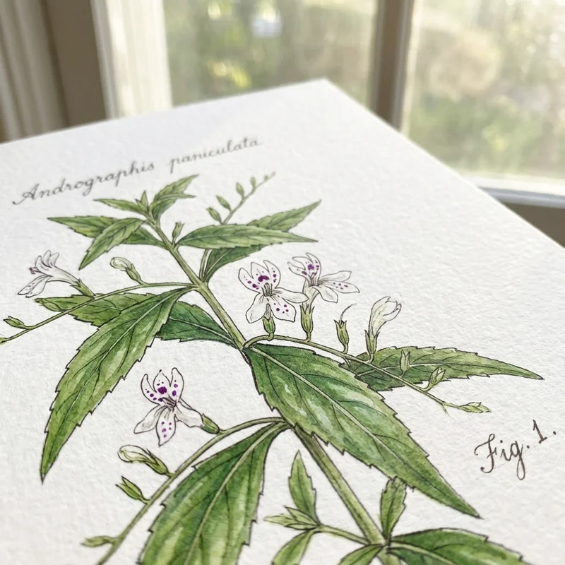

Andrographis Paniculata: Inmunomodulador Natural
La Andrographis paniculata, conocida como "Rey de los Amargos", es una planta medicinal tradicional ampliamente utilizada en la medicina ayurvédica y china. Esta hierba destaca por sus potentes propiedades inmunomoduladoras, antiinflamatorias y antivirales, convirtiéndola en un suplemento natural para fortalecer las defensas y combatir infecciones.
¿Qué es la Andrographis Paniculata?
Andrographis paniculata es una planta herb ácea anual originaria del sur de Asia. Su compuesto activo principal es el andrografólido, un diterpeno lactónico responsable de la mayoría de sus efectos medicinales. Este fitoquímico ha sido objeto de extensas investigaciones científicas que respaldan sus beneficios terapéuticos.

Beneficios Respaldados Científicamente
La investigación moderna ha validado muchos de los usos tradicionales de esta planta:
- Función inmune: Modula la respuesta inmunitaria y aumenta la producción de anticuerpos [1]
- Resfriados y gripe: Reduce la duración y severidad de síntomas respiratorios
- Infecciones urinarias: Propiedades antimicrobianas efectivas contra patógenos urinarios [2]
- Asma: Reduce la inflamación de las vías respiratorias y mejora la función pulmonar
- Propiedades antivirales: Activa contra virus respiratorios incluido coronavirus
- Antiinflamatorio: Inhibe mediadores inflamatorios como NFκB y citoquinas
- Hepatoprotector: Protege el hígado contra toxinas y daño oxidativo
Mecanismo de Acción
El andrografólido actúa a nivel celular mediante múltiples mecanismos:
- Modula la respuesta de células T y macrófagos
- Inhibe la vía de señalización NFκB, reduciendo inflamación
- Bloquea la replicación viral interfiriendo con proteínas virales
- Aumenta la actividad de células NK (asesinas naturales)
- Reduce la producción de radicales libres mediante actividad antioxidante
Dosificación y Uso
La dosis estándar de Andrographis paniculata varía según el extracto:
- Para prevención: 400-600 mg diarios de extracto estandarizado (con 4-6% andrografólidos)
- Para infecciones activas: 1200-1800 mg diarios divididos en 2-3 tomas
- Duración: Típicamente 5-10 días para infecciones agudas, 3-6 meses para soporte inmune crónico
Se recomienda tomar con alimentos para reducir posible malestar estomacal debido a su sabor amargo característico.
Combinaciones Sinérgicas
La Andrographis paniculata funciona bien con otros suplementos inmunomoduladores. Combínala con hoja de morera para un enfoque integral que incluya control glucémico, o con shatavari para equilibrio hormonal y resiliencia general.
El magnesio complementa sus efectos al apoyar la función muscular respiratoria en casos de asma y reducir la inflamación sistémica.
Contraindicaciones y Precauciones
Aunque generalmente segura, la Andrographis paniculata no es apropiada para todos:
- Evitar durante embarazo y lactancia
- No usar con inmunosupresores o anticoagulantes
- Precaución en personas con trastornos autoinmunes
- Puede causar reacciones alérgicas en personas sensibles
- No usar 2 semanas antes de cirugías programadas
Referencias
- Poolsup N, et al. (2004). "Andrographis paniculata in the symptomatic treatment of uncomplicated upper respiratory tract infection: systematic review of randomized controlled trials". J Clin Pharm Ther. PubMed
- Okhuarobo A, et al. (2014). "Harnessing the medicinal properties of Andrographis paniculata for diseases and beyond: a review of its phytochemistry and pharmacology". Asian Pac J Trop Dis. PubMed
💚 Encuentra Andrographis Paniculata en Amazon
Fortalece tu sistema inmune con Andrographis paniculata de calidad farmacéutica.
Ver en Amazon →